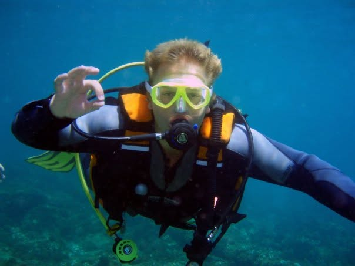

Thomas Wright
South Norwood, SE25
Mobile No: 07841 654422
Email: t_wright89@msn.com
My Online CV - built by me
Summary
Experience
Hobbies
Team‑Based Interests
Rugby
Played from Minis to U19 at Bracknell Rugby Club
Represented Berkshire County, captaining the U16 side
Experience working within structured team environments and following clear systems
Refereeing
Qualified RFU Rugby Referee (Level 1)
Strong rule‑based decision‑making and calm handling of pressured situations
Theatre & Performance
Long‑standing interest in acting and theatre
Enjoy writing and developing creative ideas collaboratively
Individual Interests
Music
Competent guitarist and more advanced bass guitarist
I have just started learning to play the double bass
Comfortable reading musical notation with a bass clef and understanding music theory
Member of a band; write original material and perform at open mic nights
Self‑teaching piano and harmonica using structured online resources

Scuba Diving
PADI Open Water and Advanced Open Water certified
Completed Deep Dive, Wreck Dive and Night Dive specialisms
Two exams away from Search & Rescue qualification, working toward Divemaster
Comfortable following strict safety procedures and technical instructions